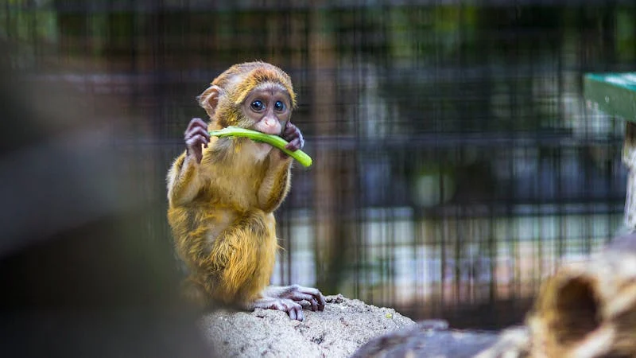

The statue of liberty was built over nine years by French sculptors.
The statue of Liberty
arrived in America several months later and was reconstructed on Liberty Island.
A paragraph flow block below!
Paul said,I saw Emma at lunch, she told meSusan wants you to get some ice cream.
Warning! this dungeon is dangerous. Avoid the ducks. Take any gold you find. Do not take any of the diamonds, they are explosive
Square of 4² = 16
Water = H2O
For more information, visit QCC website
Send email to professor H. Wu click here to send an email
Stay Connected!